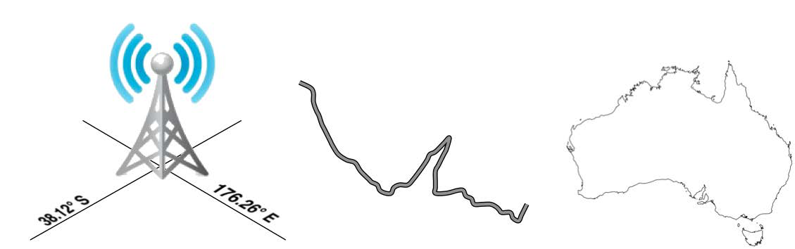
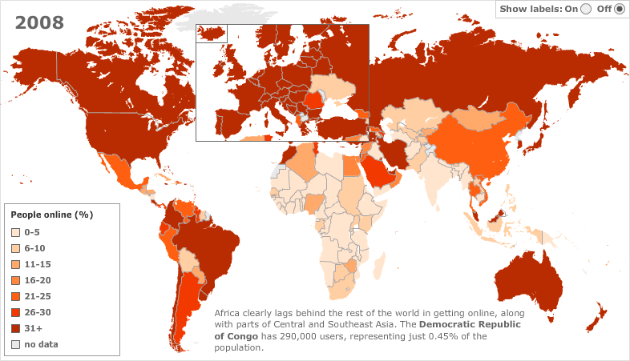
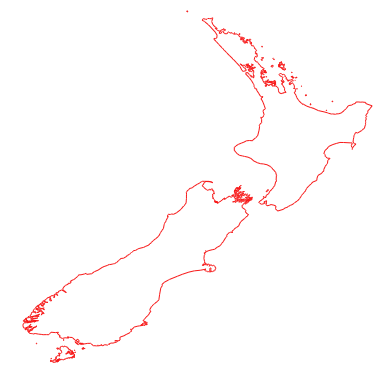

地理空间开发#
Geospatial development
“地理空间”一词指的是通过坐标定位在地球表面上的信息。这可以包括例如，手机塔的位置、道路的形状，或是一个国家的轮廓：
地理空间数据通常会将某些信息与特定位置相关联。例如，下面是来自 http://www.bbc.co.uk/ 网站的互动地图，展示了2008年每个国家有互联网接入的人口百分比：
地理空间开发是编写计算机程序以访问、操作和展示此类信息的过程。
在内部，地理空间数据通常表示为一系列 坐标，通常是纬度和经度值。还常常包含其他 属性，如温度、土壤类型、海拔或地标名称等。单个地理空间数据集可能包含成千上万（甚至百万）个数据点。例如，下面是新西兰的轮廓，包含了近12,000个独立的数据点：
由于涉及大量数据，通常会将地理空间信息存储在数据库中。本书的大部分内容将讨论如何将地理空间信息存储在数据库中，并如何高效地访问它。
地理空间数据有许多不同的形式。不同的 地理信息系统（GIS） 供应商多年来已经制定了自己的文件格式，此外，各种组织也定义了自己的标准。在将地理空间数据导入数据库时，通常需要使用 Python 库来读取正确格式的文件。
不幸的是，并非所有的地理空间数据点都是兼容的。就像距离值2.8的含义会根据您使用的是公里还是英里而大不相同一样，给定的纬度和经度值也可以代表地球表面上不同的多个点，这取决于使用的 投影。
投影是一种将地球的弯曲表面表示为二维的方式。我们将在 第二章 GIS 中详细讨论投影，但现在请记住，每个地理空间数据都有与之关联的投影。要比较或合并两组地理空间数据，通常需要将数据从一个投影转换为另一个投影。
备注
纬度和经度值有时被称为 未投影坐标。我们将在下一章学习更多关于此的内容。
除了从各种外部文件格式导入地理空间数据和将数据从一个投影转换为另一个投影的平凡任务外，地理空间数据还可以进行操作，以解决各种有趣的问题。显而易见的例子包括计算两个点之间的距离、计算一条道路的长度，或查找给定半径内的所有数据点。我们将使用 Python 库来解决所有这些问题，甚至更多。
最后，单独的地理空间数据本身并不是特别有趣。一长串坐标几乎告诉你什么都没有；直到这些数字被用来绘制图像，您才能理解它。绘制地图、将数据点放到地图上并允许用户与地图互动，都是地理空间开发的重要方面。我们将在后续章节中讨论这些内容。
The term “geospatial” refers to information that is located on the earth’s surface using coordinates. This can include, for example, the position of a cell phone tower, the shape of a road, or the outline of a country:
Geospatial data often associates some piece of information with a particular location. For example, the following is an interactive map from the http://www.bbc.co.uk/ website, showing the percentage of people in each country with access to the Internet in 2008:
Geospatial development is the process of writing computer programs that can access, manipulate, and display this type of information.
Internally, geospatial data is represented as a series of coordinates, often in the form of latitude and longitude values. Additional attributes such as temperature, soil type, height, or the name of a landmark are also often present. There can be many thousands (or even millions) of data points for a single set of geospatial data. For example, the following outline of New Zealand consists of almost 12,000 individual data points:
Because so much data is involved, it is common to store geospatial information within a database. A large part of this book will be concerned with how to store your geospatial information in a database, and how to access it efficiently.
Geospatial data comes in many different forms. Different Geographical Information System (GIS) vendors have produced their own file formats over the years, and various organizations have also defined their own standards. It is often necessary to use a Python library to read files in the correct format when importing geospatial data into your database.
Unfortunately, not all geospatial data points are compatible. Just like a distance value of 2.8 can have a very different meaning depending on whether you are using kilometers or miles, a given latitude and longitude value can represent any number of different points on the earth’s surface, depending on which projection has been used.
A projection is a way of representing the curved surface of the earth in two dimensions. We will look at projections in more detail in Chapter 2, GIS, but for now just keep in mind that every piece of geospatial data has a projection associated with it. To compare or combine two sets of geospatial data, it is often necessary to convert the data from one projection to another.
备注
Latitude and longitude values are sometimes referred to as unprojected coordinates. We’ll learn more about this in the next chapter.
In addition to the prosaic tasks of importing geospatial data from various external file formats and translating data from one projection to another, geospatial data can also be manipulated to solve various interesting problems. Obvious examples include the task of calculating the distance between two points, or calculating the length of a road, or finding all data points within a given radius of a selected point. We will be using Python libraries to solve all of these problems, and more.
Finally, geospatial data by itself is not very interesting. A long list of coordinates tells you almost nothing; it isn’t until those numbers are used to draw a picture that you can make sense of it. Drawing maps, placing data points onto a map, and allowing users to interact with maps are all important aspects of geospatial development. We will be looking at all of these in later chapters.